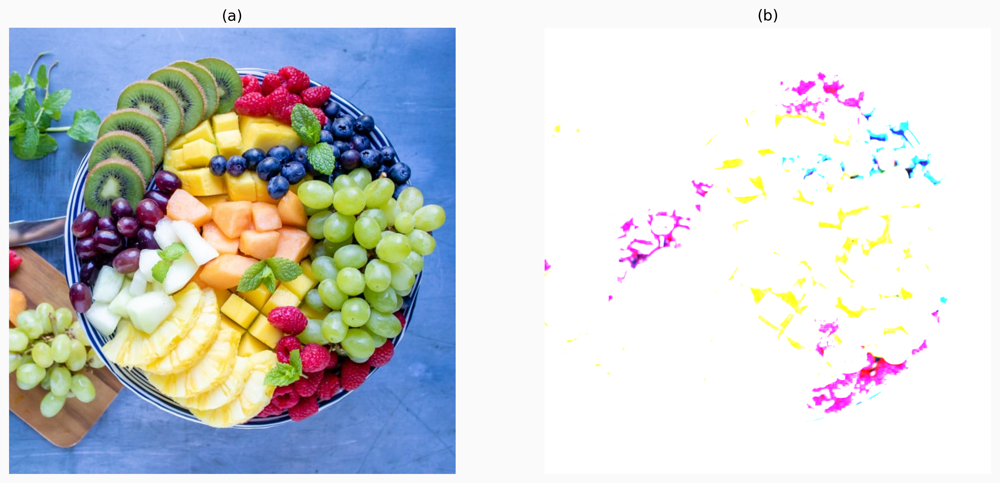

Code for Digital Image Processing Blurring Filters
Table of Contents
These are the code snippets used in Blurring Filters
part of Digital Image Processing.
Introduction
The following are the code snippet used in the lecture which focuses on the types of blurring filters used in digital image processing.
Preamble
For the following codes to work we must import the necessary modules and define some functions/classes.
import cv2 as cv # used in digital image analysis import matplotlib.pyplot as plt import matplotlib.colors # all related to colours from matplotlib.image import imread
The following is a custom Plotting class which houses some useful printing and image colour manipulation functions which can be useful in generating high-quality images for presentation or changing the colour palate of certain images.
# Class focused on plotting functions with a sense of visual aesthetics class Plotting: # Set the colour parameter for plots to fit beamer metropolis theme plt.rcParams["figure.facecolor"] = "(0.98, 0.98, 0.98)" plt.rcParams.update({'axes.facecolor': '(0.98, 0.98, 0.98)'}) matplotlib.colors.ColorConverter.colors['bg1'] = (0.98, 0.98, 0.98) @staticmethod def image_subplot_style(row, column, image_array, publish=None, show=None, rgb=None, title=None, cmap_array=None, set_cmap=False): """Presents a set of images in a grid of subplots. :param figsize: Figure size for your subplot. :param title: Add title to your plot. Treated as array. :param cmap_array: colormap array, if none entered it is treated as None. :param row: Number of rows in an image. :param column: Number of columns in an image. :param image_array: Write here the images in an array you want in the plot in the order you want it to show. :param publish: Write the name of the file you want to save it as (.eps, 200 dpi). :param show: Just activates plt.show(). :param rgb: Sets print colour to true. """ # noinspection PyTypeChecker fig_plot, axes_plot = plt.subplots(row, column, sharex=True, sharey=True) for ind, ax_loop in enumerate(axes_plot.flatten()): Plotting.remove_borders(ax_loop) # remove unnecessary borders ax_loop.tick_params(left=False, right=False, labelleft=False, labelbottom=False, bottom=False) ax_loop.imshow(image_array[ind][:][:]) # print image for subplot if rgb: # convert image bgr to rgb if set_cmap is True: ax_loop.imshow(Plotting.bgr2rgb(image_array[ind][:][:]), cmap=cmap_array[ind]) else: ax_loop.imshow(Plotting.bgr2rgb(image_array[ind][:][:])) if title is None: # Determine where to put the title on the image if ind < column: ax_loop.set_title("(" + str(chr(ord('a') + ind)) + ")", fontsize=12) else: ax_loop.set_xlabel("(" + str(chr(ord('a') + ind)) + ")", fontsize=12) else: # Determine where to put the title on the image if ind < column: ax_loop.set_title(title[ind], fontsize=12) else: ax_loop.set_xlabel(title[ind], fontsize=12) Plotting.printer(show, publish) @staticmethod def plot_subplot_style(fig_subplot, axes_subplot): """Some standard aesthetics for the matplotlib function :param fig_subplot: figure for the subplot. :param axes_subplot: axes for the subplot. """ axes_subplot.spines['top'].set_visible(False) axes_subplot.spines['right'].set_visible(False) axes_subplot.xaxis.set_tick_params(width=2) axes_subplot.yaxis.set_tick_params(width=2) plt.rcParams['axes.linewidth'] = 2 fig_subplot.tight_layout() @staticmethod def bgr2rgb(image_in_bgr): """Converts an image from BGR space to RGB. :param image_in_bgr: image in BGR format. :return: image in RGB format. """ return cv.cvtColor(image_in_bgr, cv.COLOR_BGR2RGB) @classmethod def compare_images(cls, original, altered): """Creates two individual windows to showcase the filters effect :param original: Original unaltered image :param altered: Output altered image """ # A static function to showcase both the original and the altered image cv.imshow('Original Image', original) cv.imshow("Output Image", altered) # Wait and close all windows cv.waitKey(0) cv.destroyAllWindows() @classmethod def printer(cls, show=None, publish=None): # To print the plot in a nice .pdf file in 300 dpi format. if publish: plt.savefig(publish + ".png", format='png', dpi=300, bbox_inches='tight') # To lazy to write plt.show() if show: plt.show() @classmethod def color_loop(cls): prop_cycle = plt.rcParams['axes.prop_cycle'] colors = prop_cycle.by_key()['color'] return colors @classmethod def remove_borders(cls, axes_rm_borders): axes_rm_borders.spines['top'].set_visible(False) axes_rm_borders.spines['right'].set_visible(False) axes_rm_borders.spines['bottom'].set_visible(False) axes_rm_borders.spines['left'].set_visible(False) axes_rm_borders.tick_params(which='both', size=0, labelsize=0)
Gaussian Blur
The Gaussian blur is a type of image-blurring filter that uses a Gaussian function (which is also used for the normal distribution in statistics) for calculating the transformation to apply to each pixel in the image.
Below is our function which is a wrapper for the opencv implementation. This wrapper function adds some conveniece of producing and printing images easily.
def blur_gaussian(image, k_height=5, k_width=5, show=None, rgb=None, publish=None): # apply the filter gaussian_blur = cv.GaussianBlur( cv.imread(image), (k_height, k_width), 0) # Invoke the sub-plotting function Plotting.image_subplot_style( 1, 2, image_array=[cv.imread(image), gaussian_blur], show=show, publish=publish, rgb=rgb) return cv.imread(image), gaussian_blur
The following code is just the syntax for the opencv implementation for GaussianBlur and is NOT MEANT TO BE EXECUTED.
GaussianBlur(src, ksize, sigmaX[, dst[, sigmaY[, borderType[, hint]]]]) -> dst
Once all the necessary code is executed, it is time to plot our results. We first invoke our test image and invoke the blurgaussian function.
image = "Fruit.jpg" blur_gaussian(image, show=True, rgb=True, publish="images/Blurring-Filters/Gaussian-blur-5")

The image is currenlty set with k_width = k_size = 5. Increasing this more
would create a higher blurring effect.
image = "Fruit.jpg" blur_gaussian(image, k_width=9, k_height=9, show=True, rgb=True, publish="images/Blurring-Filters/Gaussian-blur-9")

image = "Fruit.jpg" blur_gaussian(image, k_width=13, k_height=13, show=True, rgb=True, publish="images/Blurring-Filters/Gaussian-blur-13")

image = "Fruit.jpg" blur_gaussian(image, k_width=17, k_height=17, show=True, rgb=True, publish="images/Blurring-Filters/Gaussian-blur-17")

image = "Fruit.jpg" blur_gaussian(image, k_width=21, k_height=21, show=True, rgb=True, publish="images/Blurring-Filters/Gaussian-blur-21")

A Big Comparison
Here, lets compare all these filter settings in one big image for a better comparison.
image = "Fruit.jpg" imaged = cv.imread (image) o, gb_5 = blur_gaussian(image, k_width=5, k_height=5, rgb=True) o, gb_9 = blur_gaussian(image, k_width=9, k_height=9, rgb=True) o, gb_13 = blur_gaussian(image, k_width=13, k_height=13, rgb=True) o, gb_17 = blur_gaussian(image, k_width=17, k_height=17, rgb=True) o, gb_21 = blur_gaussian(image, k_width=21, k_height=21, rgb=True) image_array=[imaged, gb_5, gb_9, gb_13, gb_17, gb_21] Plotting.image_subplot_style(2, 3, image_array=image_array, show=False, publish="images/Blurring-Filters/Gaussian-blur-comparison", rgb=True)

Box Filter
A box blur (also known as a box linear filter) is a spatial domain linear filter in which each pixel in the resulting image has a value equal to the average value of its neighboring pixels in the input image.
def blur_box_filter(image, k_height=5, k_width=5, show=None, rgb=None, publish=None): # apply the filter blur_boxed = cv.boxFilter(cv.imread(image), -1, (k_height, k_width), normalize=False) # Invoke the sub-plotting function Plotting.image_subplot_style( 1, 2, image_array=[cv.imread(image), blur_boxed], show=show, publish=publish, rgb=rgb) return cv.imread(image), blur_boxed
The following code is just the syntax for the opencv implementation for boxFilter and is NOT MEANT TO BE EXECUTED.
cv.boxFilter(src, ddepth, ksize[, dst[, anchor[, normalize[, borderType]]]]) -> dst
Results of the Box Filter
image = "Fruit.jpg" blur_box_filter(image, k_width=5, k_height=5, show=False, rgb=True, publish="images/Blurring-Filters/Boxed-blur-5")

image = "Fruit.jpg" blur_box_filter(image, k_width=9, k_height=9, show=False, rgb=True, publish="images/Blurring-Filters/Boxed-blur-9")
Blur Filter
def blur_normal_box(image, k_height=5, k_width=5, show=None, rgb=None, publish=None): # apply the filter blur_boxed = cv.blur(cv.imread(image),(k_height, k_width)) # Invoke the sub-plotting function Plotting.image_subplot_style( 1, 2, image_array=[cv.imread(image), blur_boxed], show=show, publish=publish, rgb=rgb) return cv.imread(image), blur_boxed
The following code is just the syntax for the opencv implementation for GaussianBlur and is NOT MEANT TO BE EXECUTED.
cv.blur(src, ksize[, dst[, anchor[, borderType]]]) -> dst
image = "Fruit.jpg" blur_normal_box(image, show=True, rgb=True, publish="images/Blurring-Filters/Blur-normal-box-5")
images/Blurring-Filters/Blur-normal-box-5
image = "Fruit.jpg" blur_normal_box(image, k_height=9, k_width=9, show=True, rgb=True, publish="images/Blurring-Filters/Blur-normal-box-9")
images/Blurring-Filters/Blur-normal-box-9
image = "Fruit.jpg" blur_normal_box(image, k_height=13, k_width=13, show=True, rgb=True, publish="images/Blurring-Filters/Blur-normal-box-13")
images/Blurring-Filters/Blur-normal-box-13
image = "Fruit.jpg" blur_normal_box(image, k_height=17, k_width=17, show=True, rgb=True, publish="images/Blurring-Filters/Blur-normal-box-17")
images/Blurring-Filters/Blur-normal-box-17
image = "Fruit.jpg" blur_normal_box(image, k_height=21, k_width=21, show=True, rgb=True, publish="images/Blurring-Filters/Blur-normal-box-21")
A Big Comparison
Here, lets compare all these filter settings in one big image for a better comparison.
image = "Fruit.jpg" imaged = cv.imread (image) o, gb_5 = blur_normal_box(image, k_width=5, k_height=5, rgb=True) o, gb_9 = blur_normal_box(image, k_width=9, k_height=9, rgb=True) o, gb_13 = blur_normal_box(image, k_width=13, k_height=13, rgb=True) o, gb_17 = blur_normal_box(image, k_width=17, k_height=17, rgb=True) o, gb_21 = blur_normal_box(image, k_width=21, k_height=21, rgb=True) image_array=[imaged, gb_5, gb_9, gb_13, gb_17, gb_21] Plotting.image_subplot_style(2, 3, image_array=image_array, show=False, publish="images/Blurring-Filters/Blur-normal-box-comparison", rgb=True)
Median Filter
def blur_median(self, k_size=5, show=None, rgb=None, publish=None): # apply the filter median_blur = cv.medianBlur(cv.imread(self.picture), k_size) # Invoke the sub-plotting function Plotting.image_subplot_style(1, 2, image_array=[cv.imread(self.picture), median_blur], show=show, publish=publish, rgb=rgb) return cv.imread(self.picture), median_blur
The following code is just the syntax for the opencv implementation for medianBlur and is NOT MEANT TO BE EXECUTED.
cv.medianBlur(src, ksize[, dst]) -> dst
Bilateral Filter
import cv2 as cv # used in digital image analysis
Now to define a function for calculating
"""Apply a bilateral filter to an image.
:param show: Presents the comparative image to the user. :param publish: Prints the image with the name being the entered value (200 dpi, .eps) :param rgb: Converts images from bgr to rgb. :return: Returns original image and the filtered image. """
def bilateral_filter(image, show=None, publish=None, rgb=None, pixel_d=5, sigma_colour=75, sigma_space=75): original = cv.imread(image) # set original image # apply the filter bilateral = cv.bilateralFilter( original, pixel_d, sigma_colour, sigma_space) # Invoke the sub-plotting function Plotting.image_subplot_style(1, 2, image_array=[cv.imread(image), bilateral], show=show, publish=publish, rgb=rgb) # returns the original and the filtered image return cv.imread(image), bilateral
image = "Fruit.jpg" bilateral_filter(image, show=True)